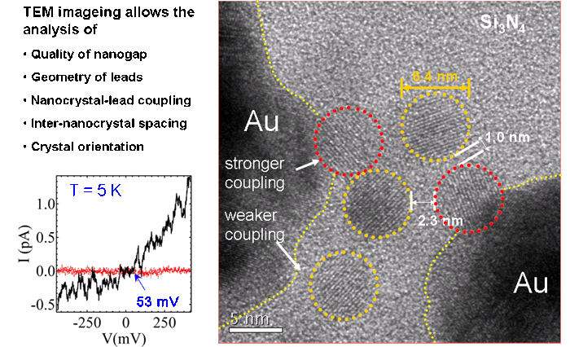

DNA & PROTEIN ANALYSIS GRAPHENE GRAPHENE NANOPORES NANOPARTICLE SYNTHESIS FLUORESCENCE NANOFABRICATION NANOELECTRONICS FORCE MICROSCOPY EQUIPMENT
Introduction
Preparation of nanogaps and measurement of few nanocrystals
CdSe nanocrystal memory
Controlling nanogap photoconductivity through optoelectronic trap manipulation
References

We carry out low-noise charge transport in nanoscale structures and electronic devices
(transistors, memory, etc). We have variable temperature cryostats (0.3-800K) dedicated to this research.
As a substrate we usually use silicon nitride membrane devices which allow the preparation
of nanoscale devices ("nanogaps") directly with Electron Beam Lithography, as well as imaging with
transmission electron microscopy.
Preparation of nanogaps and measurement of few nanocrystals
High-quality nanometer-size electrode gaps ("nanogaps") compatible with atomic resolution
imaging can be made using electron beam lithography on silicon nitride membranes. We showed that this is possible
because the electron backscattering from thin membrane substrates is sufficiently reduced to allow for nm-resolution
e-beam fabrication.

Fabrication of nanogaps is direct and can be achieved by anyone with access to a standard
electron-beam lithography system, without the need for break-junction techniques on silicon nitride membrane
substrates.

We have then measured transport from five PbSe nanocrystals capped with oleic acid ligands
within a small gap. In the figure below you can see the single nanocrystals (open circles) localized inside a 10 nm
gap. The graph on the left (black curve) displays the current-voltage trace corresponding to these nanocrystals
measured at temperature of 5 K. The electrical signal measured before nanocrystals were deposited corresponding to
an empty gap is also shown (red curve).

For more details on the preparation of nanogaps and measurements of PbSe nanocrystals:
Michael D. Fischbein and Marija Drndic
"Nanogaps by direct lithography for high-resolution imaging and
electronic characterization of nanostructures"
Applied Physics Letters 88 (6), 063116, 2006.
cond-mat/0512128
CdSe nanocrystal memory
Undoped semiconductor CdSe nanocrystal (NC) arrays have been found to be highly insulating.
Due to the nanometer-size scale of the NCs, quantum confinement effects play a dominant role in their electronic
properties. Individual CdSe NCs have discrete energy levels separated by 100 meV and charging energies 150 meV.
CdSe quantum dots are capped with 1 nm thick organic ligands which act as tunnel barriers for charge transport
between adjacent dots. Time-dependent transport phenomena, history effects and persistent photoconductivity in
CdSe NC arrays have been observed, and proposed models to explain these effects include charge traps, the Coulomb glass,
and Levy statistics.
We study memory effects in the electronic transport in colloidal undoped CdSe NC quantum dot arrays.
Conduction through a NC array can be reduced by applying a negative voltage and then reset with a positive voltage.
Light can be used to reset or even to increase conduction in the NC array. The switching of the conduction in CdSe NC
arrays is highly sensitive to the value and duration of the laser and voltage pulses. The ability to controllably
switch NC array conduction can be exploited to fabricate memory devices composed of CdSe NCs. Such devices may be
advantageous for several reasons.
(i) Production of large quantities of CdSe NCs is easy and inexpensive.
(ii) CdSe NC spectra are dependent on the NC size, which may allow selective memory resetting with visible light
in devices composed of different size NCs. For instance, in a device composed of red and blue NCs, green light
will reset the red NCs but not the blue NCs.
(iii) NC memory is robust, rewritable, and persists for long times.

Voltage (dashed line) and current (solid line) vs time for two consecutive memory cycles for a CdSe nanogap device.
The numbered steps are: (1) write (V<0, dark), (2) wait (V=0, dark), (3) read (V<0, dark), and (4) erase (V=0,
photoexcitation) or (V>0, dark). In this example, twrite=twait=tread=terase=10 s
and V=-50 V during twrite and tread. In Step 4, NCs were photoexcited. Iwrite(T) and
Iread(T) are currents at time T after the start of the write and read steps, respectively.
Controlling nanogap photoconductivity through optoelectronic trap manipulation
We found a robust and reproducible procedure for controlling the trap population in nanocrystal nanogap devices
and showed that qualitatively different photocurrent behaviors can be produced depending on how traps are
initialized prior to a measurement. Electric field-induced population and optically induced depopulation of
traps can reverse the temperature dependence of the photoconductivity.

We created nanogap devices with CdSe/ZnS core-shell nanocrystals in the gap region; after annealing, these
devices can be operated as photodetectors with tunable photoconductivity. We investigated the temperature
dependence of photocurrent and found that it depends on the illumination history of the device. Recent
laser illumination causes optically induced trap emptying and higher low-temperature photocurrent, while
recent voltage cycling in the dark causes electric field induced trap population and lower low-temperature
photocurrent.

Our model, shown above, illustrates the role of traps and the importance of measurement sequence.
Our method for dynamically controlling trap populations achieves optimized photodetector sensitivity
at low or high temperatures for light sources, photovoltaics, electronics, and other applications. Moreover,
we find that a range of temperature-dependent behaviors previously attributed to material differences are
reproducible in a single device and provide a possible explanation for contradictory reports of the
temperature dependence of photoconductivity in the literature. These results carry implications for past
and future experiments and may inspire analogous procedures for trap manipulation in other systems.
For more details:
Michael D. Fischbein and Marija Drndic
"CdSe nanocrystal quantum-dot memory"
Applied Physics Letters 86 (19), 193106, 2005.
Lauren J. Willis*, Jessamyn A. Fairfield*, Tali Dadosh*, Michael D. Fischbein, Marija Drndic
"Controlling nanogap quantum dot photoconductivity through
optoelectronic trap manipulation"
Nano Letters, 9 (12), pp 4191-4197, 2009.
2010, Marija Drndic